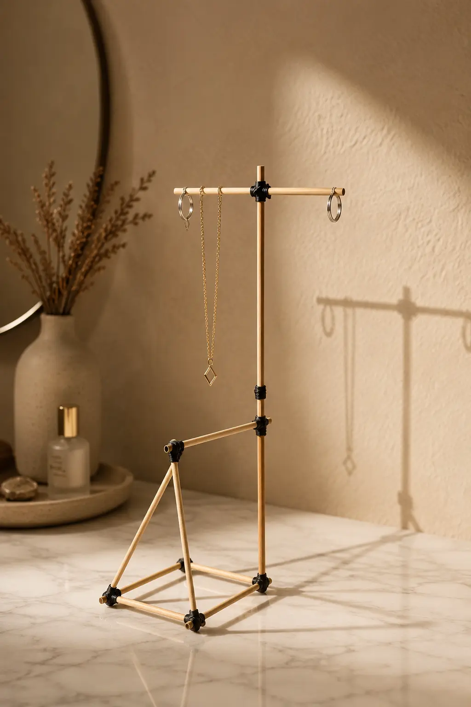
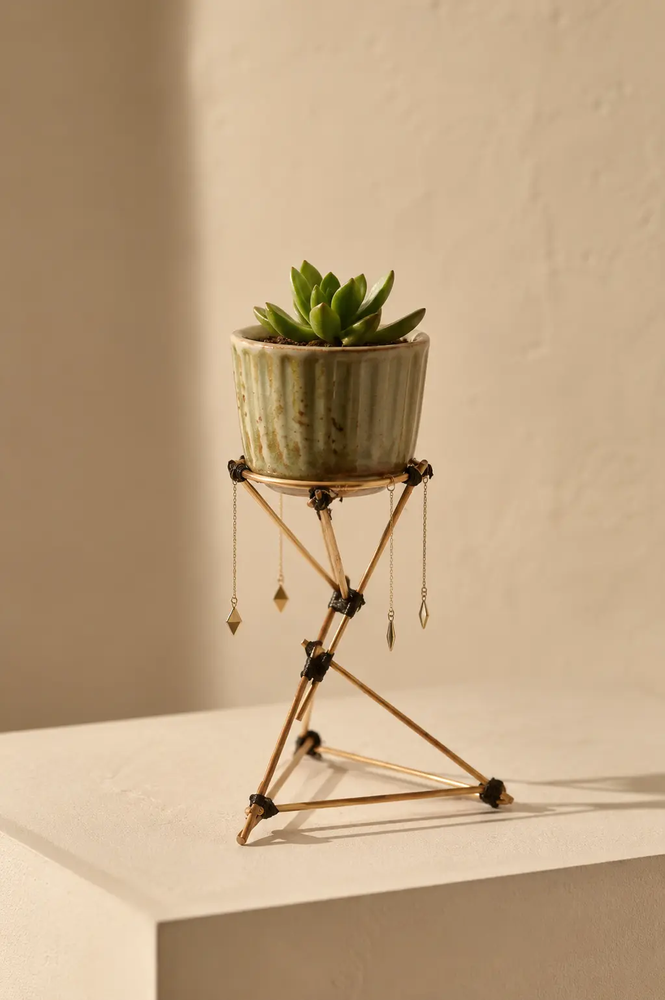
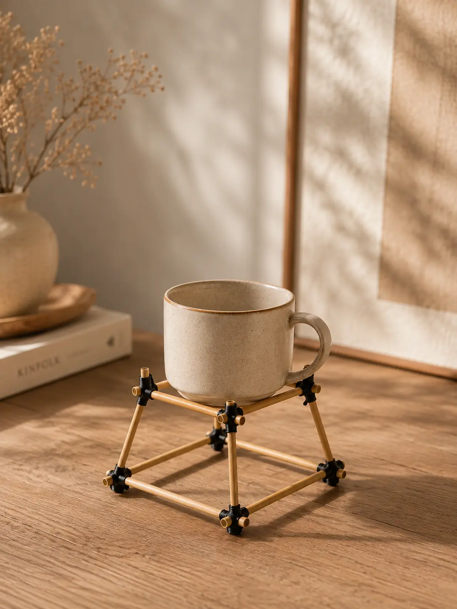

Минимум деталей.
Бесконечность форм.
«ГРАНЬ» — это взрослый архитектурный конструктор основанный на законах физики и математического баланса. Вы создаёте живую самонесущую систему из шлифованного бамбука и эластичного силикона. Никакого клея. Никакого пластика. Только чистое тактильное созидание.



Тактильная терапия
Контраст теплой текстуры дерева и матового силикона заземляет разум и развивает мелкую моторику.
Подвижное искусство
Конструкция не статична. Сегодня это подставка под кофе, завтра — геометрический мобиль под потолком.
Инструкция по фиксации и вязке узлов
Прочность и неизменяемость геометрии каркаса «ГРАНЬ» основаны на двух законах физики: триангуляции (жесткости треугольных ферм) и симметрии натяжения муфт. Муфта работает за счёт трения, но неравномерная стяжка может искривить всю раму. Ниже приведены ключевые правила сборки узлов.
01. Ортогональный крест
КОМПЕНСАЦИЯ НАКЛОНА
Проблема перекоса: если намотать муфту только по одной диагонали вокруг двух соседних выступов (по 8 мм), они сомкнутся, а противоположные концы вывернет наружу, что создаст деформацию («винт»).
Чистые 90 градусов: чтобы палочки не смыкались под натяжением резинок, нужно равное силовое противодействие. Натягивайте резинку крест-накрест (в форме буквы X) либо вяжите «восьмерку», создавая встречные компенсирующие силы во всех направлениях.
- • Не стягивайте только одну сторону угла.
- • Используйте X-образный бандаж для баланса сил.
- • Перекрестие резинки в пазу служит упором.
02. Закон жесткости
ТРИАНГУЛЯЦИЯ И ДВОЙНОЙ КОКОН
Правило треугольника: треугольник — это единственная жесткая плоская фигура. Любые рамы в вертикальных плоскостях обязательно должны быть триангулированы.
Вязка двойного кокона (нахлёст): чтобы палочки не люфтили на излом, на месте перекрытия вяжут два кокона по краям нахлёста (слева и справа) по пошаговой инструкции ниже.
- • 1. Уложите резинку вдоль палок: вытяните резиновую петлю в линию вдоль стыка. Посередине ляжет двойная нить, а по бокам выступят левое и правое «ушка».
- • 2. Начните обмотку: прижмите левое ушко пальцем к палкам. Правое ушко сильно растяните и сделайте первый оборот поверх лежащей вдоль резинки.
- • 3. Сделайте плотный кокон: туго мотайте резинку справа налево к левому ушку. Продольная часть резинки при этом скроется под витками.
- • 4. Закройте замок: у самого левого края проденьте финальную петельку сквозь левое ушко, которое вы прижимали пальцем.
- • 5. Спрячьте концы: отпустите натяжение. Сила упругости заставит резинку сжаться, и продетые петли втянутся под крайние витки обмотки.
- • Повторите процедуру зеркально на втором конце нахлёста.
03. Спираль (Windmill Joint)
3 ПАЛОЧКИ
Самоцентровка нагрузок: при соединении трех стержней в одной вершине их оси не пересекаются в одной точке, а ложатся по кругу со взаимным зацеплением.
Распределение сил: такое смещение исключает появление слабого места излома. Сила натяжения муфт распределяется по кругу, автоматически выравнивая и стабилизируя узел в трехмерном пространстве.
- • Расположите палочки веером с небольшим сдвигом.
- • Стяните центр треугольной петлей из муфты.
- • Муфта затягивает все три палочки одновременно.
3D Чертежная Мастерская
Выберите готовую модель из библиотеки ниже. Вы можете свободно вращать 3D-чертеж в пространстве, детально масштабировать узлы и следовать интерактивному руководству сборки шаг за шагом.
Выберите модель для сборки
Название шага
Инструкции по сборке деталей...
Расход деталей под данную модель
Совместимость с коробкой «ГРАНЬ Стандарт»
Из деталей коробки Стандарт можно полностью собрать эту модель.
Название
Описание
Выберите свой формат «ГРАНИ»
Все наборы поставляются в эко-коробках из плотного крафт-картона с монохромной полиграфической графикой. Контраст фактуры теплого шлифованного бамбука и матового графитового силикона выглядит дорого и благородно.
Набор «ГРАНЬ Стандарт»
Универсальный базовый комплект для терапевтического моделирования, сборки подставок, фоторамок, полок и кинетических мобилей.
* Допускается естественная погрешность ручной нарезки и шлифовки до ±2 мм (длина палочек может составлять 9.8 см и 6.8 см). Это никак не влияет на прочность сборки (вылет хвостиков за узлы составит ~6 мм вместо 8 мм).
Набор «ГРАНЬ Дополнение»
Комплект расходников для тех, кто хочет масштабировать постройки, строить сложные пространственные мосты и сферы.